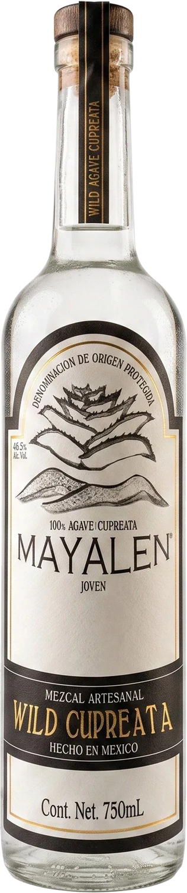

01/ 06
Cupreata
Wild Cupreata
El primero de la colección y el más complejo. Crece libre en las laderas de piedra que bajan al río Balsas, donde la roca lo alimenta de minerales por más de diez años. En Guerrero le dicen papalote por cómo abre sus pencas.
- Origen
- Cuenca del Balsas, Guerrero
- Suelo
- Ladera rocosa, rica en minerales
- Maduración
- 8 a 16 años
Nota de cataAroma cítrico y mineral, con cuerpo sedoso al agitar la copa, sabor ligero dulce, con un retrogusto sutil de chocolate obscuro.